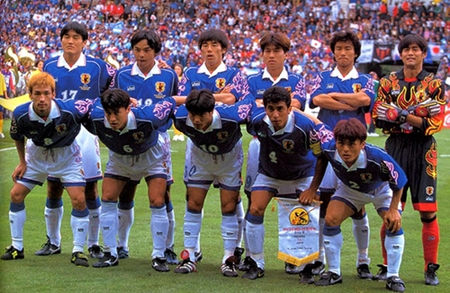
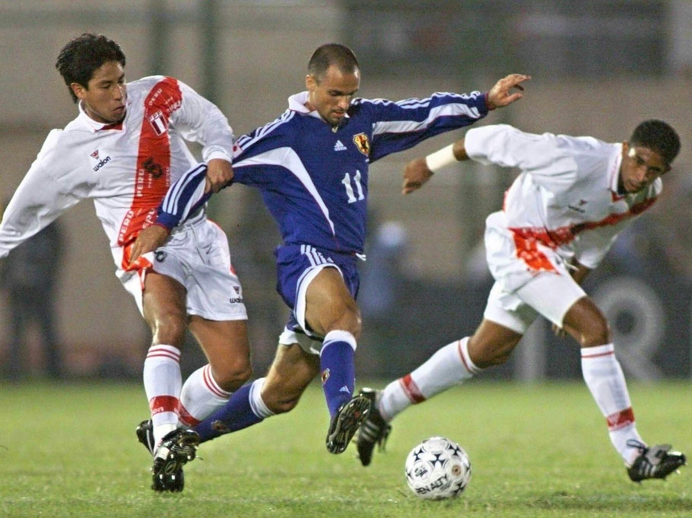
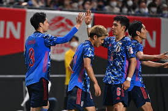

Japão
No ano de 1998, a Copa do Mundo foi sediada na França, segunda vez no país europeu. Contudo, o torneio marcou a estreia do Japão em Mundiais de Seleções. Porém, o campeonato acabou cedo para os asiáticos, caindo na fase de grupos da competição.
A estreia na copa contra a Argetina
logo no início, aos 27 minutos, do 1º tempo, Gabriel Batistuta, o camisa 9 argentino, saiu cara a cara com o goleiro Yoshikatsu Kawaguchi. Dessa maneira, o centroavante marcou para os sul-americanos e acabou dando os três pontos. Portanto, a rede balançada no início da 1ª etapa rendeu a primeira derrota ao Japão e a primeira vitória à Argentina.
Ademais, alguns atletas no elenco argentino são: Javier Zanetti, Diego Simeone, Hernán Crespo e Marcelo Gallardo. Os três último são técnicos atualmente, do Atlético de Madrid, do São Paulo e do River Plate, respectivamente.
O frango japonês
Na 1ª etapa, o jogo teve boas chances para os croatas, mas não conseguiram balançar as redes japonesas. No entanto, aos 31 minutos do 2º tempo, o goleiro Yoshikatsu Kawaguchi tomou um frango. O gol dos europeus saiu de cruzamento de Aljoša Asanović para Davor Šuker mandar no meio do gol, mas o arqueiro deixou a bola passar por baixo de seu corpo. Dessa maneira, a partida acabou 1 x o para a Croácia. Então, o Japão já estava eliminado. A Argentina venceu a Jamaica. E, assim, os argentinos e croatas já haviam feito seis pontos cada, possibilitando que os jamaicanos e os japoneses fizessem no máximo três.
O fim da Copa para o Japão
Os jamaicanos dominaram a partida contra um fraco Japão. Dessa forma, marcaram o primeiro gol aos 38 minutos, após bobeada da defesa adversária, Marcus Gayle deu assistência para Theodore Whitmore balançar a rede rival com um chute bem colocado no canto inferior.
Posteriormente, aos 8′ do 2º tempo, Theodore saiu correndo em lançamento de Fitzroy Simpson, com toda calma cortou para a esquerda e bateu no cantinho novamente. Logo depois, aos 29 minutos o brasileiro naturalizado japonês, Wagner Lopes, arrumou para Masashi Nakayama empurrar e marcar o primeiro gol do Japão na história das Copas do Mundo.